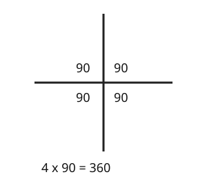

Part of Angle Facts. Answer in the chat (1: ..., g: c), add sure or guess after any answer, and say done when finished.
Last time: four angles meet at a point, three of them 90 degrees. What is the fourth? You said b) 90, and it is.

A straight line gave you 180 to take from. Around a point you go all the way round, a full turn, so the angles add up to 360 degrees (notes 1, 3).
Q1. Angles of 150, 120 and x meet at a point. What is x?
90 (sure)
Right: 150 + 120 = 270, and 360 - 270 = 90 (notes 3).
Q2. Five equal angles meet at a point. How big is each one?
72
Right: 360 / 5 = 72 (notes 3).
Q3. Zoe says angles around a point add up to 180, like angles on a line. What is wrong?
a line is only half a turn. Going all the way round a point is a full turn, which is 360
Right: half a turn against a full turn (notes 1, 3).
You can now find a missing angle around a point.
Two straight lines cross. One of the four angles is 40 degrees. What is the angle opposite it?
b (sure)